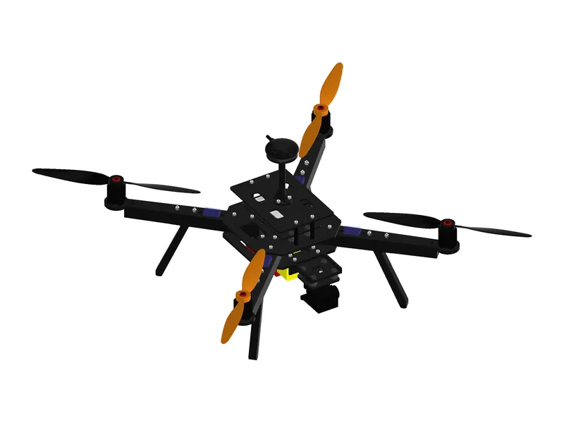
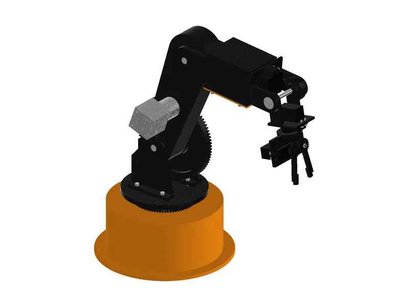

Mechanical engineering portfolio
Jay Patel
I'm a mechanical engineering junior at Stevens Institute of Technology. I design complete machines in Autodesk Inventor, from fully constrained assemblies to manufacturing drawings, and check them with analysis I write myself in Python: kinematics, rigid-body dynamics, FEA in gmsh and scikit-fem, and flight simulation.
Every project here ships with a bill of materials, drawings and a calculation report. None has been built yet, so each number is labelled as a CAD measurement, a calculation or a simulation.

- School
- Mechanical Engineering, Stevens Institute of Technology
- Projects
- 3 complete, 9 planned
- Main tools
- Autodesk Inventor, Python, gmsh + scikit-fem
01Selected work3 projects
-

01Designed and simulated, not built
Quadcopter Drone
A 1.7 kg quadcopter designed to be 3D printed in carbon-fibre nylon, with a 139-part Inventor assembly, FEA and a 6-DOF flight simulation.
- All-up weight
- 1696g
- Parts in assembly
- 139
- Arm FEA safety factor
- 4.7
- Hover endurance, simulated
- 15.5min
Autodesk Inventor 2027 / Python / scikit-fem / gmsh / SU2
-

02Designed and simulated, not built
6-DOF Robotic Arm
A six-axis desktop arm for a 500 g payload, designed for 3D printing: 538 mm reach, my own gear and belt reductions, a 99-part Inventor assembly, dynamics and FEA.
- Reach
- 538mm
- Payload
- 0.5kg
- Shoulder torque SF
- 2.03
- Parts in assembly
- 99
Autodesk Inventor 2027 / Python / scikit-fem / gmsh / NumPy / Matplotlib
-

03Designed and simulated, not built
F1 Pushrod Suspension
A full-size double-wishbone pushrod front corner designed in Inventor, with kinematics, motion ratios, member forces and FEA under 4 g cornering and braking.
- Bump steer, 60 mm travel
- 0.26mdeg
- Ride frequency
- 4.1Hz
- Lowest FEA SF (p99.9)
- 1.59
- Parts in assembly
- 126
Autodesk Inventor 2027 / Python / SciPy / NumPy / scikit-fem / gmsh
02Skills and toolsby project
| Tool or method | 01Quadcopter | 02Robotic arm | 03F1 suspension |
|---|---|---|---|
| Tools | |||
| Autodesk Inventor: parts, assemblies, drawings | Yes | Yes | Yes |
| Python: NumPy, SciPy, Matplotlib | Yes | Yes | Yes |
| FEA in gmsh + scikit-fem | Yes | Yes | Yes |
| CFD in SU2 | Yes | No | No |
| Print preparation in Bambu Studio | Yes | Yes | No |
| Methods | |||
| Structural FEA | Yes | Yes | Yes |
| Kinematics | No | Yes | Yes |
| Dynamics: rigid-body, flight, vehicle | Yes | Yes | Yes |
| Statics, buckling and torque sizing | No | Yes | Yes |
| Mechanism and gear design | No | Yes | Yes |
| Propulsion modelling | Yes | No | No |
| Robotics | No | Yes | No |
| Design for 3D printing (DfAM) | Yes | Yes | No |
| Assemblies and engineering drawings | Yes | Yes | Yes |
■Next up9 planned, in this order
- 04Electric Go-Kart DrivetrainElectric drivetrain for a 25 mph kart: motor, reduction, axle, chain and mounts, sized from torque and acceleration targets.
- 05Automated Conveyor Sorting SystemModular belt conveyor that sorts packages up to 5 kg by size, with drive sizing, sensor mounts and structural FEA.
- 06Planetary GearboxCompact 5:1 planetary reducer with sun, planets, ring, carrier, bearings and housing, plus stress analysis.
- 07Hydraulic Scissor Lift100 kg payload over 500 mm of travel, with cylinder force through the stroke and FEA on arms and pins.
- 08Mechanical Prosthetic Hand3D-printable five-finger tendon-driven hand with return mechanisms, tendon force and joint torque analysis.
- 09Geneva Indexing MachineMotor-driven indexing mechanism with interchangeable 4, 5 and 6-slot wheels and a comparison of their dynamics.
- 10Wind Turbine with Gearbox1 m horizontal-axis turbine with blades, hub, gearbox and nacelle, plus power and torque estimates by wind speed.
- 11Two-Cylinder EngineFour-stroke twin with crank, pistons, valve train and timing, plus displacement, compression ratio and inertial forces.
- 123D Printer Filament FeederGeared, spring-tensioned 1.75 mm filament feeder with feed force and torque calculations.